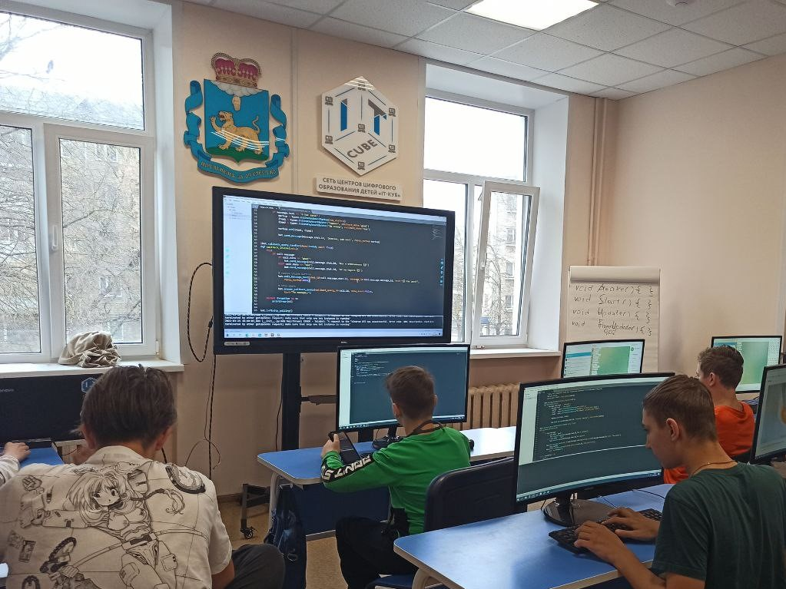

"Об IT-cube"
IT-куб – это федеральная сеть профильного образования по подготовке специалистов в области IT, начиная с семи лет. Уникальная атмосфера
технического творчества, где дети не просто изучают информационные технологии, а создают программные проекты и продукты.

IT-CUBE – центры, где школьник сможет бесплатно освоить перспективную «цифровую» профессию. В рамках нацпроекта «Образование» такие площадки открываются при школах и лицеях по всей стране. Рассказываем о них в нашем видео. IT-cube стремится к тому что бы дети были образоваными и умными, делая из них програмистов и компьютерных гениев.
айтикуб.рф
#образованиевприоритете
А если вы хотите ещё больше знать о IT-cube переходите по ссылке на нашу группу в вк! https://vk.com/itcubepskov
У нас даже есть офицальный сайт! https://itc60.ru/
В IT-cube есть несколько направлений например как: Мобильная разработка, Veb-разработка и VR-AR приложения